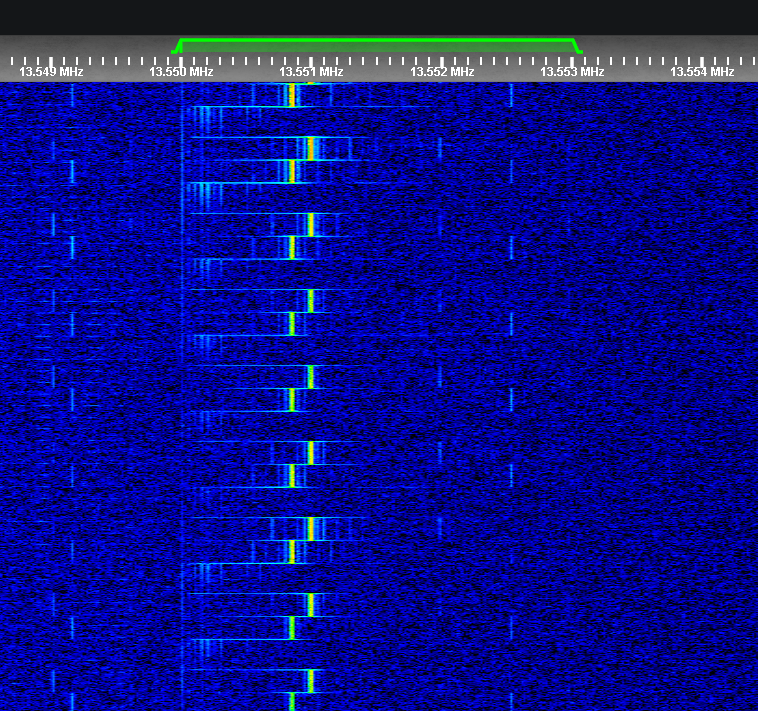
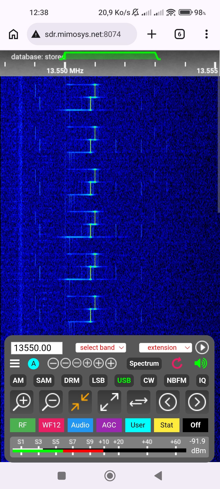
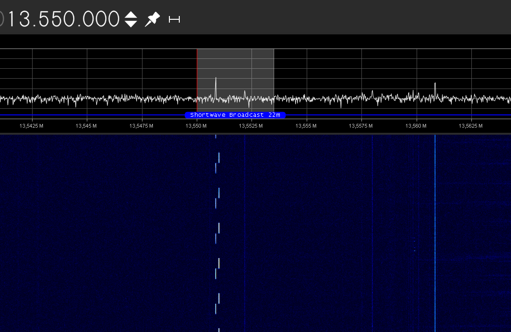

Click here to go back to the main page.
| Name: | UNID 13550 |
|---|---|
| Frequencies | 13550 kHz |
| Status | Active |
| Voice | Uknown |
| Mode | USB |
| Location | Near Lille, France |
| Known counterpart stations | Uknown |
| Description | This station discovered the 21 May 2026, is transmitting a two tone channel marker on 13550 kHz, the purpose is unknown, we believe its transmitted near Lille in Northern France. Not much known about this station. |
| Media |
Pictures of the station in a waterfall from the Mimosys KiwiSDR in Lille, France:   Picture of the station from the F5430SWL SDR:  Audio record from the supposely channel marker of this station: |